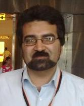

|
|
|
نام: محمد علی فیضپور
سمت: مشاور عالی
تحصیلات: دکترای اقتصاد صنعتی، دانشگاه نیوکسل انگلستان
|
 |
خلاصه سوابق حرفهای
محمدعلی فیضپور در سال 1346 در میبد متولد شد و مقطع دبیرستان را در رشته ریاضی- فیزیک در همین شهرستان به پایان رساند و سپس برای ادامه تحصیل در رشته اقتصاد نظری در مقطع لیسانس در سال 1364 راهی شیراز شد. محمدعلی فیضپور در سال 1369 از این دانشگاه فارغالتحصیل گردید و خدمت خود را در مرکز تحقیقات روستایی جهاد سازندگی استان یزد آغاز نمود. با قبولی در سال 1370، مقطع کارشناسیارشد را در سال 1374 در رشته اقتصاد با گرایش برنامهریزی منطقهای در دانشگاه تربیت مدرس به پايان رساند و از همین سال به عنوان عضو هیأت علمی در دانشگاه یزد آغاز بهکار نمود. وی در سال 1378 با اخذ بورس تحصیلی برای ادامه تحصیل به انگلستان رفت و دکتری خود را در رشته اقتصادصنعتی از دانشگاه نیوکسل دریافت کرد. با بازگشت به کشور در سال 1383 و با بنیانگذاری دانشکده اقتصاد، مدیریت و حسابداری در دانشگاه یزد، ریاست این دانشکده را به عهده گرفت. از ایشان تا کنون حدود 60 مقاله در نشریات علمی و کنفرانسهای ملی و بینالمللی به چاپ رسیده و انجام و همکاری در 15 طرح پژوهشی در سطوح استانی و ملی نیز نتایج پژوهشی او است. تدریس و راهنمایی پایاننامههای تحصیلی نیز بخشی از فعالیتهای آموزشی او را تشکیل میدهد. تدوین استراتژی توسعه پایدار بخش صنعت و معدن استان یزد آخرین کار پژوهشی محمدعلی فیضپور است که در سال 1390 به پایان رسیده است.
|
- دکتری اقتصادصنعتی
- سابقه بیش از 20 سال
- ارائه مقالات حرفهای
- ریاست دانشکده اقتصاد، مدیریت و حسابداری یزد
|
مهارت های تخصصی و کلیدی
- چاپ و نشر مقالات به صورت حرفه ای
- تدریس و راهنمای پایان نامه های دوره کارشناسی ارشد
- مدیرپروژه های مطالعاتی و پژوهشی
|

Newcastle upon Tyne
|
منتخب مقالات
- بررسی بهکارگیری نظام ملی نوآوری در ایران، بیمها و امیدها
- مقايسه تطبيقي ميزان آلايندگي صنعتي در صنايع با سطوح مختلف تكنولوژي
- شناسایی و رتبهبندی عوامل مؤثر بر کارآفرینی
- تأثیر فناوری برتر در بهبود مصرف انرژی
- تمايزات منطقهاي در بهرهوري آب صنايع توليدي
|

|
سوابق فنی
- ریيس دانشکده الهيات دانشگاه يزد، 1376 تا 1378
- رييس دانشکده اقتصاد، مديريت و حسابداري دانشگاه يزد، 1383 تا 1385
- عضو كميته برنامه ريزي دانشگاه يزد، 1376
- عضو هيات تحريريه مجله علمی – پژوهشی سياستگذاری اقتصادی، دانشگاه يزد (1388 تا کنون)
- عضو شوراي پژوهشي دانشگاه يزد، 1383 تا 1385.
|

|
|